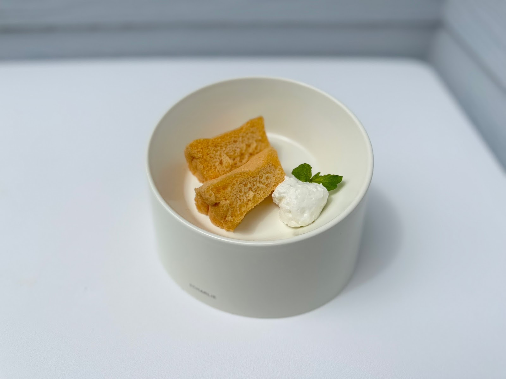

CAFE&BAKE Lily's
always with nico
ホーム
メニュー
ギャラリー
コンセプト
アクセス
ギャラリー
一軒家の外観から店内の様子、愛犬と過ごすひとときまで。CAFE&BAKE Lily'sの雰囲気を写真でご紹介します。
夜のテラス席。奥には店内のグリーンタイルカウンターも見えます。
Photo: happy MW
ドリンクとお食事の一例。
Photo: CAFE&BAKE Lily's
サンドイッチプレートの一例。
Photo: 出口直美

手作りスイーツの一例。
Photo: CAFE&BAKE Lily's
店舗のブランド幕とテラスの様子。
Photo: しおり
バースデープレートの一例。愛犬と一緒にお祝いできます。
Photo: きゃわたん
実際の雰囲気は、ぜひ店舗でお確かめください。
アクセスを見る
最新の写真はInstagramでも公開しています。
Instagramを見る
×